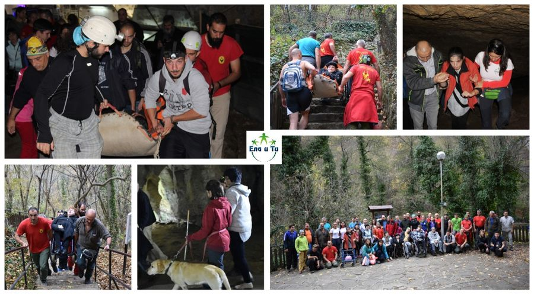

Бъди в помощ
Бъди в помощ е първото обучение, целящо придобивена на знания и умения за оказване на помощ и транспортиране на пострадал / човек в затруднена или пълна неподвижност в неурбанизирани територии, с лек до средно тежък терен.
Идеята за създаването му се появи в резултат на големия интерес от страна на доброволци, активно да участват в мероприятия в подкрепа на хора в неравностойно положение, при посещение на труднодостъпни за тях места.
Защо да се включа:
Ще придобиеш нови общи знания и умения за оказване на първа помощ, при липса на медицински специалисти.
Ще научиш различни методи и начини за транспортиране на трудноподвижен/неподвижен човек в терени, където няма нужда от специализирана екипировка за движение на хора без затруднения
Ще се запознаеш с основните методи за оказване на другарска взаимопомощ
Ще придобиеш знанията и уменията, необходими ти за пълноценно участие в активности, включващи и хора в неравностойно положение
Ще научиш различни техники и методи, които можеш да използваш в непредвидени екстремни / бедствени ситуации, при излети сред природата и пр.
Ще получиш сертификат за преминат успешно курс
Кога ще се проведе обучението?
Два поредни уикенда, събота от 09:00ч. до неделя 18:00ч.
Датата за провеждане на обучението ще бъде уточнена при записали се мин.7 човека. Максималният брой участници в курса е 14 човека.
Къде ще се проведе обучението?
Хижа “Добра вода”, обл.Пазарджик
Условия за участие
Обучението е отворено за всички желаещи, без изисквания за специални умения
2 нощувки в хижа ”Добра вода”;
2 закуски, 2 обяда и 2 вечери
чай и кафе /без ограничение за количество/
ползване на специализирано оборудване;
сертификат за завършено обучение издаден от “Планинско спасяване - област Пазарджик”.
Лектори:
лекар
планински и пещерен спасител
Как да се запиша
„ЕЛА И ТИ“ – фондация, София
ЕИК 177135613
основание - Бъди в Помощ
Програма за обучение
Част 1
Теория
Анатомия. Болести и травми.
Пострадал, мерки за безопасност.
Практика
Спешна помощ. CPR. Кръвоспиращи превръзки. Имобилизиране., Преглед на пострадал, попълване на фиш, комуникация с лекар. Оказване на помощ.
Част 2
Носилки- професионални и импровизирани. Кога, какво може и не може? Въжета и възли. Видове въжета, примки и прусъци. Възли: осмица; протриващ; бабин; самозатягащ, импровизирана седалка. Ролки, карабинери и самохвати. Блок ролки и импровизирани такива. Опори. Примки и рингове.
Полиспасти: Z- полиспаст, прост полиспаст, противотежест. Поставяне на пострадал в носилка. Транспортиране на пострадал. Локализиране на пострадал, ПДП, имобилизиране и транспортиране. -учебна спасителна акция. See less
